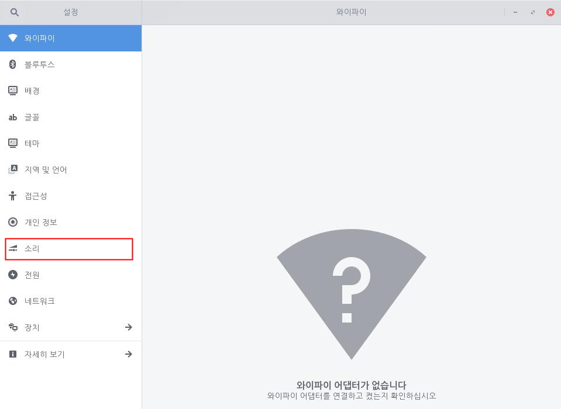
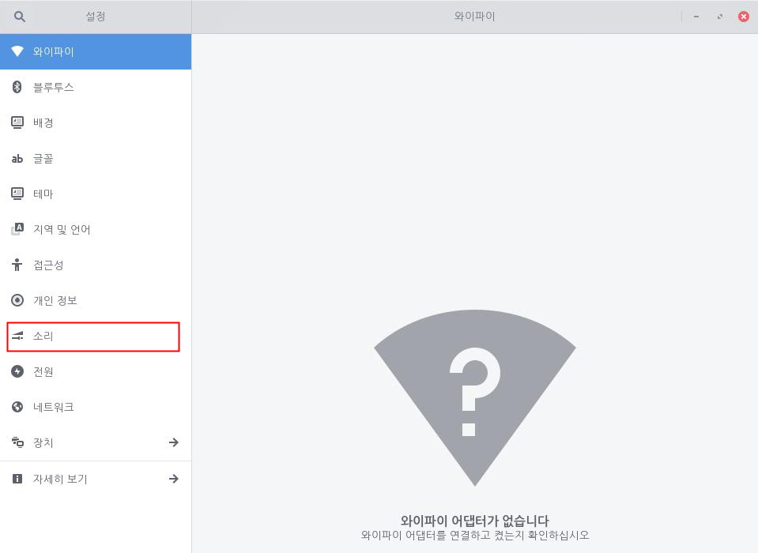
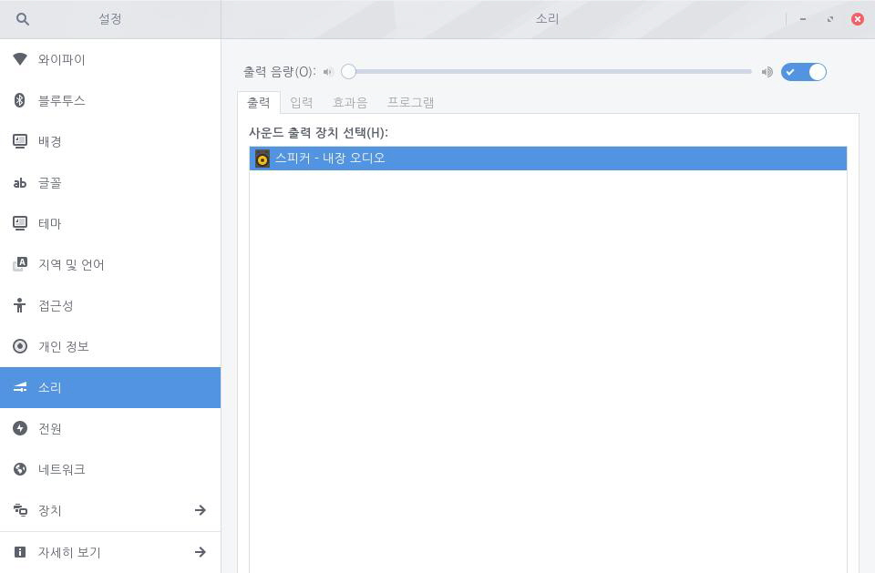

사용자 컴퓨터에서 나오는 소리의 음량을 조절합니다. 설정 내의 소리에서 음량을 변경하거나 키보드에 있는 소리 조절 키를 사용하여 음량을 조절할 수 있습니다. 특정 시스템의 경우 Fn 키가 필요할 수 있습니다. 출력 음량은 아래 단계를 진행하여 설정할 수 있습니다.1. 좌측 하단의 [시작]아이콘을 클릭하고 검색 창에 "설정"을 입력한 후 [설정] 애플리케이션을 실행합니다.
 2. [설정] 애플리케이션 사이드 바에서 [소리]를 클릭합니다.
2. [설정] 애플리케이션 사이드 바에서 [소리]를 클릭합니다.
3. [출력 음량]의 설정 단추를 좌우로 밀어 소리를 켜거나 끌 수 있습니다. 슬라이더에서는 음량 세기를 조절할 수 있습니다. 왼쪽으로 이동할수록 소리가 작아지며, 오른쪽으로 이동할수록 소리가 커집니다.